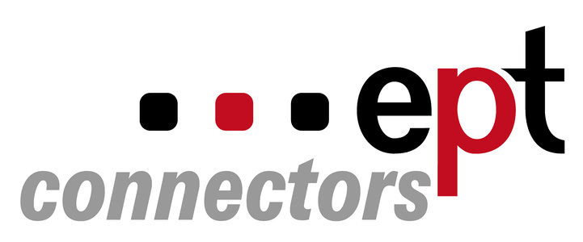
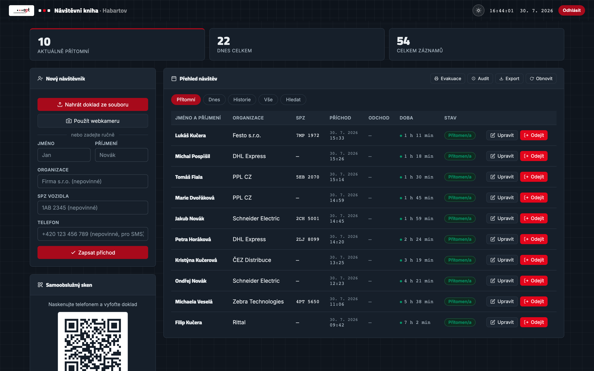
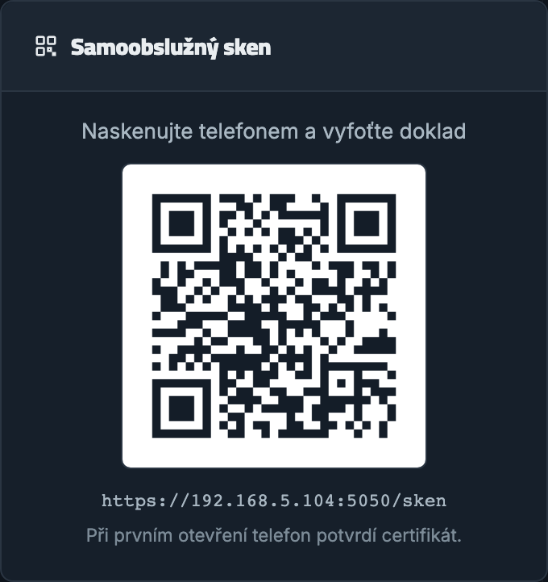
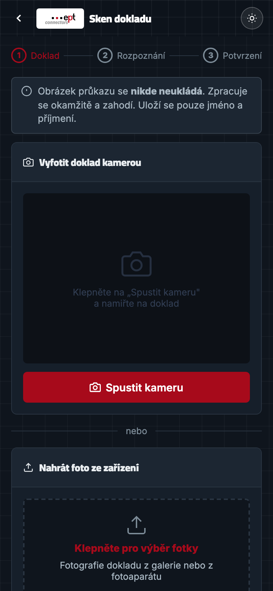
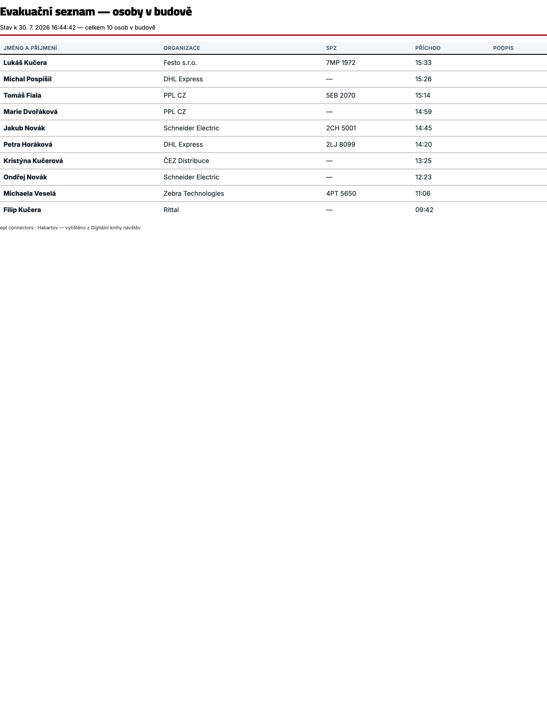
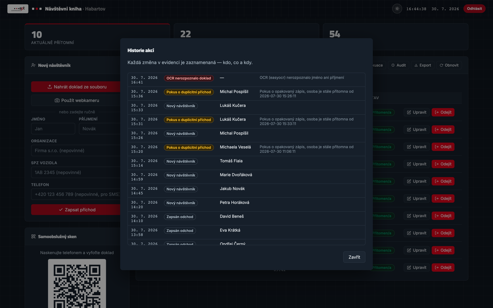

Papírová kniha u vrátnice nahrazená systémem, který ví, kdo je právě v budově — a dokáže to vytisknout do třiceti sekund od poplachu.

1Ručně psané jméno v knize u vrátnice je po měsíci nedohledatelné. Kdo tu byl 3. dubna odpoledne? Odpověď zabere hodiny listování — pokud vůbec.
Kniha zůstane na recepci, tedy v budově, kterou právě opouštíte. Seznam osob uvnitř nikdo nemá. To je bezpečnostní i právní problém.
Otevřená kniha ukazuje každému příchozímu jména a firmy všech předchozích návštěv. Osobní údaje leží na pultu, viditelné komukoli.
Zásadní otázka: kdyby dnes v 10:15 zazněl požární poplach, jak dlouho by trvalo zjistit, kolik lidí je v areálu a kdo to je?
Vlevo zápis návštěvníka, vpravo kdo je v budově a jak dlouho. Doba pobytu se počítá živě, přehled se sám obnovuje.

Kód je trvale na obrazovce recepce. Míří na adresu skenu v místní síti.
Vlastním telefonem. Nic neinstaluje, otevře se mu stránka skenu.
Systém vybere z série snímků ty nejostřejší a přečte z nich jméno.
Jméno zkontroluje, doplní firmu a odešle. Recepce ho hned vidí.
Snímek se zpracuje v paměti a zahodí. Na disk ani do databáze se nedostane — uloží se výhradně jméno a příjmení. To je zásadní rozdíl proti kopírování dokladů.
Kdo nechce použít telefon, nadiktuje jméno obsluze. Samoobsluha je zkratka, ne podmínka — nikdo se u vrátnice nezasekne.
Poznámka k prostředí: demo běží celé v místní síti, bez internetu a bez cloudu. Žádný osobní údaj neopustí tuhle budovu.


Jediné tlačítko vytiskne, kdo je právě v budově, od kdy a z jaké firmy — včetně sloupce na podpis pro kontrolu na shromaždišti.

Nový návštěvník, opakovaná návštěva, zapsaný odchod, změna telefonu, pokus o duplicitní zápis i selhání rozpoznání dokladu — vše s časem a jménem.

Když už je někdo v budově, druhý příchod se nezaloží. Systém řekne, od kdy je přítomen.
U vracejícího se návštěvníka ukáže datum poslední návštěvy. Malá věc, která dělá dojem.
Podle jména, dne i časového rozmezí. Výsledky se zobrazují průběžně, bez potvrzování.
Celá evidence jedním kliknutím, s dobou pobytu a správnou diakritikou.
Záměrně jednoduchá: jeden proces, jedna databáze v souboru, dvě webové stránky bez frameworku. Méně dílů znamená méně věcí, které se rozbijí.
Rozpoznávání dokladu běží na stejném stroji jako aplikace. Žádný snímek neodchází do internetu.
Frontend jsou dvě statické stránky. Není co aktualizovat, není co propadnout bezpečnostní chybou v cizí knihovně.
Celá evidence je jeden soubor SQLite. Záloha je kopie souboru.
| Údaj | Povinný | Poznámka |
|---|---|---|
| Jméno, příjmení | ano | z dokladu nebo ručně |
| Organizace | ne | dodavatel, auditor… |
| SPZ vozidla | ne | pro parkování v areálu |
| Telefon | ne | jen pro notifikace |
| Čas příchodu | ano | automaticky |
| Čas odchodu | ne | prázdný = osoba je v budově |
Fotka dokladu, číslo dokladu, datum narození, adresa. Ze snímku se vezme jméno a snímek se zahodí.
| Endpoint | Přístup |
|---|---|
POST /api/login | PIN |
POST /api/ocr | i bez přihlášení (kiosek) |
POST /api/navstevnici | i bez přihlášení (kiosek) |
GET /api/navstevnici | admin / správce |
PATCH /api/navstevnici/<id> | admin / správce |
GET /api/stats | admin / správce |
GET /api/audit | admin / správce |
GET /api/export.csv | admin / správce |
GET /api/qr | veřejné |
Zapisuje se u vrátnice, kde návštěvník žádný účet nemá a mít nemůže. Čtení evidence je naopak vždy za přihlášením.
Mluvíme o prototypu v testovacím provozu. Do ostrého nasazení patří:
· doba uchování záznamů a automatické mazání starších
· informační cedule u vrátnice (informační povinnost)
· zápis do evidence činností zpracování
· šifrování databáze na disku
· role a hesla pro skutečné pracovníky recepce
V testovacím provozu systém zapíše jméno jen tehdy, jde-li o jednoho ze dvou předem známých lidí. U jakéhokoli jiného dokladu vrátí prázdno a vyzve k ručnímu doplnění — radši nic než špatné jméno.
Každá obrazovka a každý stav aplikace byl vyfocen a nezávisle ohodnocen podle designových kritérií. Nálezy jsou doložené v repozitáři.
| Kolo | Obrazovek | Kritických | Důležitých | Výsledek |
|---|---|---|---|---|
| První | 45 | 6 | 58 | 13 skutečných defektů opraveno |
| Druhé | 45 | 5 | 57 | všechny opravy potvrzeny, zbytek falešné nálezy |
| Třetí | 10 | 0 | 9 | bez regresí |
Technické chyby prosakující k uživateli, nápověda odkazující na neexistující tlačítko, dotykové cíle pod normou, rozpadlý rytmus formuláře na mobilu.
Nálezy o kontrastu — ověřeno výpočtem, hodnoty vycházejí 8,1 až 8,8 : 1, tedy s rezervou nad normou. Doměnky se neopravovaly.
Dnešní stav je funkční prototyp v testovacím provozu. Tohle jsou známé mezery — žádná z nich není překvapení a všechny jsou řešitelné.
| Oblast | Stav | Co je potřeba |
|---|---|---|
| Rozpoznávání dokladů | omezené | Zatím jen dva známí lidé. Rozšíření na kohokoli vyžaduje víc testovacích dokladů. |
| Databáze | nešifrovaná | SQLite bez šifrování na disku. Pro ostrý provoz zašifrovat nebo přesunout na server. |
| Přihlašování | PINy | Dva společné PINy místo osobních účtů. Bez rozlišení, který pracovník co udělal. |
| Přihlášení po restartu | nepřežije | Tokeny žijí v paměti. Po restartu se recepce musí přihlásit znovu. |
| Certifikát | vlastní | Telefon při prvním otevření potvrzuje varování. V ostrém provozu firemní certifikát. |
| Doba uchování | neřešeno | Záznamy se nemažou. Potřeba nastavit lhůtu a automatický výmaz. |
| Zálohování | neřešeno | Zatím ruční kopie souboru. Potřeba pravidelná automatická záloha. |
| Evidence, audit, export, evakuace | hotovo | Funkční a otestované. |
Dva až tři týdny, papírová kniha běží paralelně jako záloha.
· osobní účty místo společných PINů
· firemní certifikát
· automatická záloha databáze
· informační cedule u vstupu
Papír se odloží, systém je jediná evidence.
· rozpoznávání pro libovolný doklad
· šifrovaná databáze
· doba uchování a automatický výmaz
· zaškolení všech na recepci
Až základ běží spolehlivě.
· SMS nebo e-mail hostiteli při příchodu
· tisk jmenovky návštěvníka
· více vstupů a budov
· reporty pro management
1. Jdeme do pilotu na vrátnici, a od kdy? 2. Kdo je vlastníkem na straně EPT (IT, bezpečnost, provoz)? 3. Jaká je požadovaná doba uchování záznamů? 4. Má systém běžet na serveru EPT, nebo na vyhrazeném stroji u vrátnice?